画風コピペシート
写真1枚を、好きな画風に。もしもの姿にも。ChatGPTなど、画像を作れるAIに貼るプロンプトを、選ぶだけで作れます。
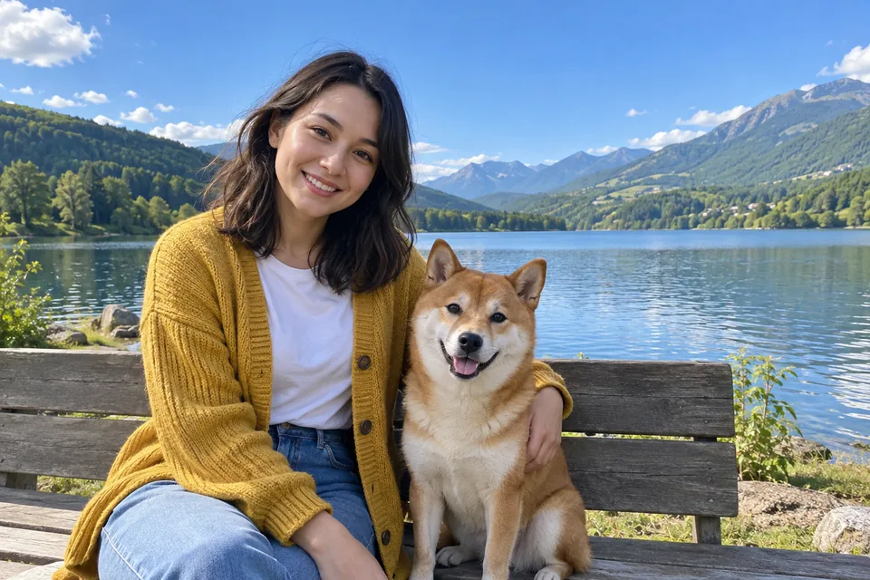
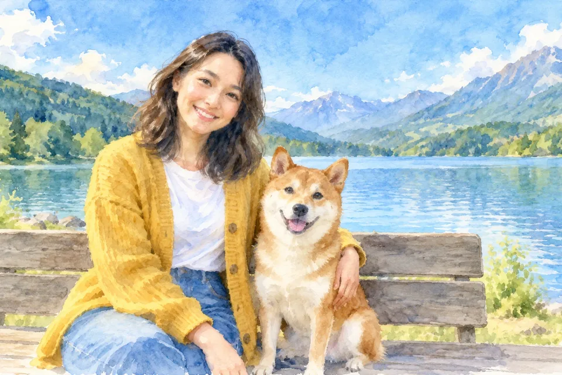
見本は、AIで作った架空の人物と犬の写真を、このページのプロンプトを使ってChatGPTで描き直したものです
- 画風の例 78種
- もしも 15種（現在非公開33種）
- 文字・縦横比も選べる
- 登録なし
- 入力はどこにも送信されません
使い方
- 画像を作れるAIに写真を添付ChatGPTなど、画像を作れるAIを開いて、描き直したい写真を1枚。2枚を合わせるときは、1枚目に人物や動物、2枚目に土台の写真。
- このサイトで選ぶ画風・画像内の文字・縦横比・避けることをタップで選ぶ。選ばなくても作れます。
- コピーして貼る「全文をコピー」して、そのAIに貼って送るだけ。
画風の見本
同じ写真を、画風だけ変えて描き直した例です。タップすると、その画風を選んだ状態で始められます。
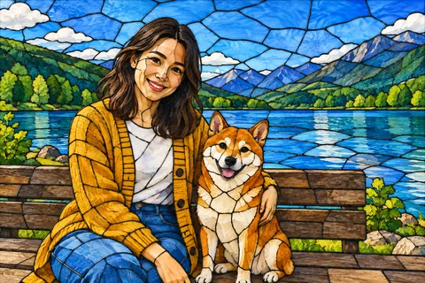
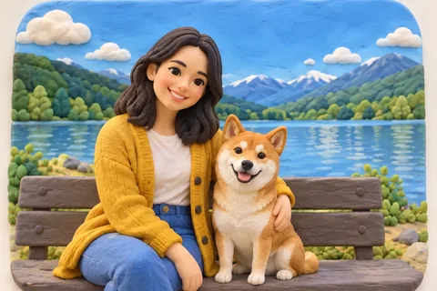
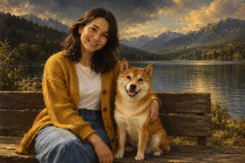
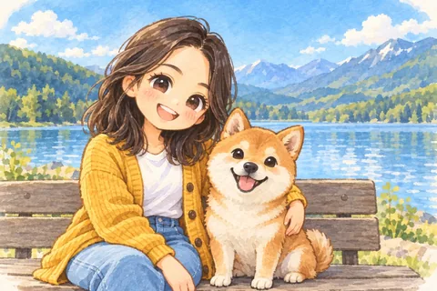
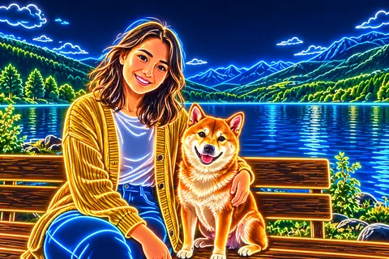
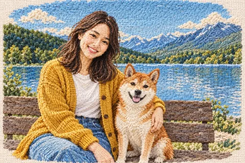
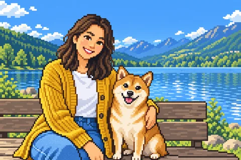
見本は、AIで作った架空の人物と犬の写真（いちばん上の「元の写真」）を、このページのプロンプトを使って、ChatGPTとOpenAIの画像生成で描き直したものです。
※ 仕上がりは、使うAIやモデルによって差が出ます。同じプロンプトでも、見本と同じにならないことがあります。
2枚を合わせる
人物や動物の写真を、別の写真の中に入れられます。画風もいっしょに変えられます。
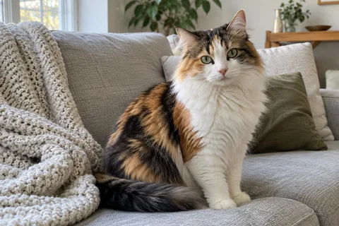
1枚目：人物や動物見本は、AIで作った架空の猫と海辺の写真を、このページのプロンプト（差し込む）を使ってOpenAIの画像生成で合わせたものです（3回作ったうち、2枚目にいちばん近いもの）。2枚目の背景も少し描き直されることがあり、この見本でも雲や水平線の位置が変わっています。
※ 仕上がりは、使うAIやモデルによって差が出ます。同じプロンプトでも、見本と同じにならないことがあります。
もしもシリーズ
「もしもあなたが〇〇だったら」を選ぶだけ。写真の人やペット、ぬいぐるみなどが、その姿に生まれ変わった1枚になります。似合うものをAIが選ぶ選択肢もあります。
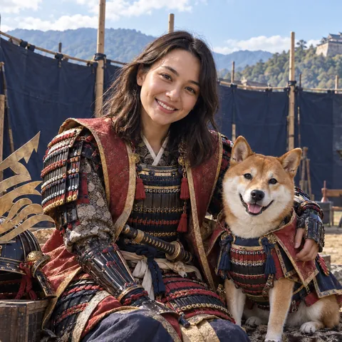

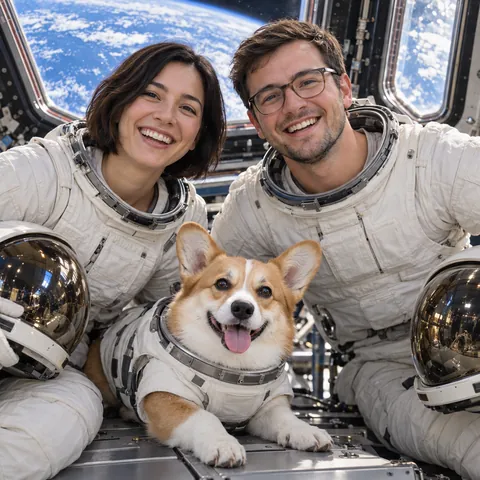
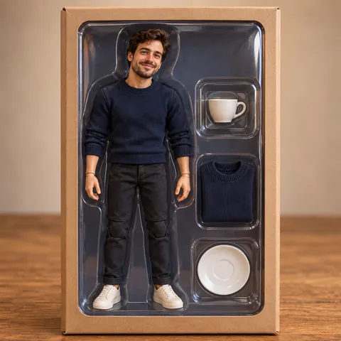

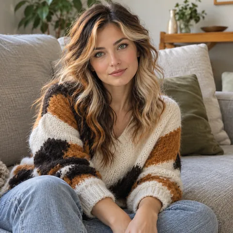
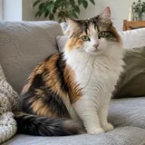
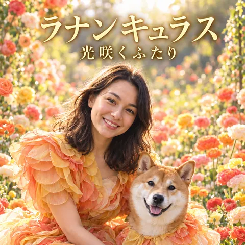
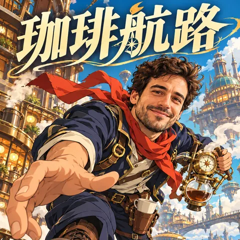
作例は、AIで作った架空の人物・ペットの写真（左下の小さい写真）を、このページのプロンプトを使ってOpenAIの画像生成で変身させたものです。
※ 仕上がりは、使うAIやモデルによって差が出ます。同じプロンプトでも、作例と同じにならないことがあります。
使う前に
- 自分で撮った写真や描いた絵、加工・合成が許可されている画像を使ってください。
- 人が写っている写真は、写っている本人（子どもは保護者）の了承を取ってから使ってください。
- 合成・変身させた写真を、実際にあった出来事のように見せる使い方はしないでください。
- 作品のキャラクターになる「もしも」で作った画像を、自分で見て楽しむ範囲を超えて使うときは、権利者が許可している範囲（ファン作品のガイドラインなど）で使ってください。
- SNSに載せるときは、それぞれのSNSが決めているAI画像のルールに従ってください。
- 同じプロンプトでも、出来は毎回変わります。使うAIやモデルによっても、仕上がりに差が出ます。使うAIのプランや、作れる枚数は変わることがあります。